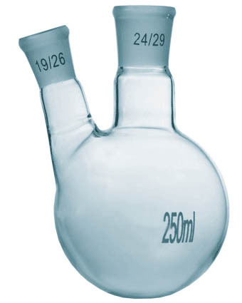

Чем мы занимаемся? |
Изготовление и ремонт нестандартной лабораторной посуды и приборов из термостойкого и кварцевого стекла по эскизам заказчика в короткие сроки. |
Как с нами связаться? |
Генеральный Директор:
Доманский Александр Васильевич |
Телефон: (812) 494-93-07
Факс: (812) 494-93-07 |
|
 |
|